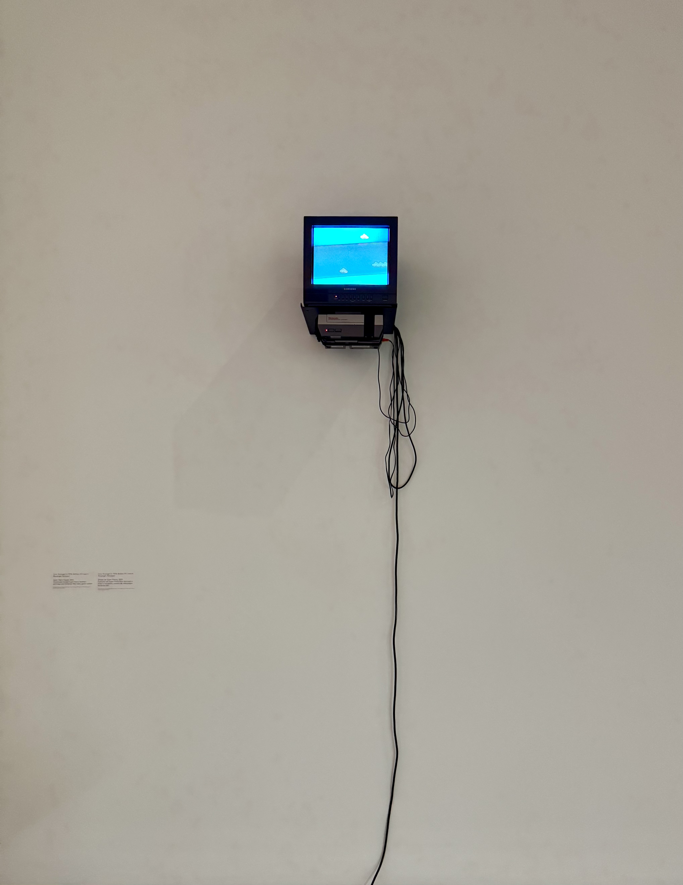
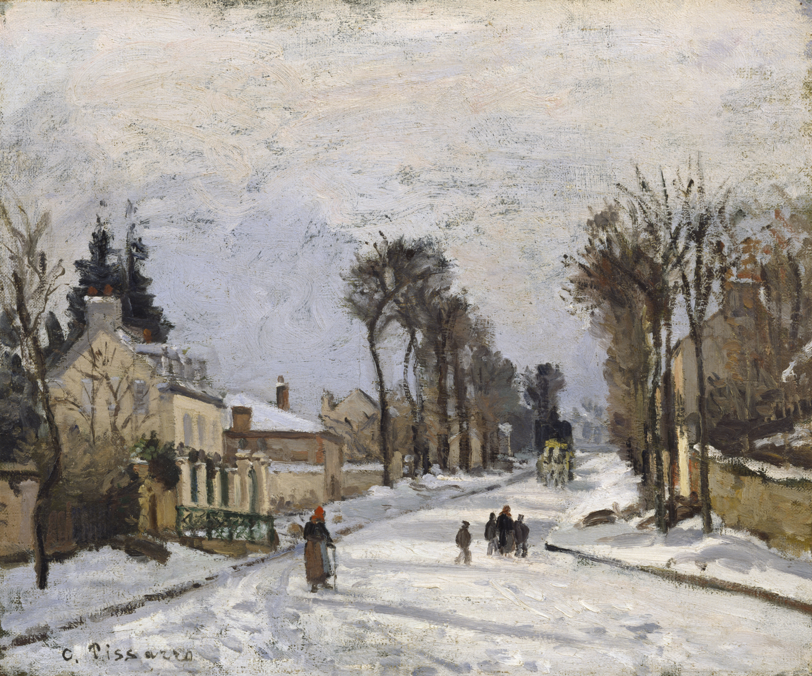
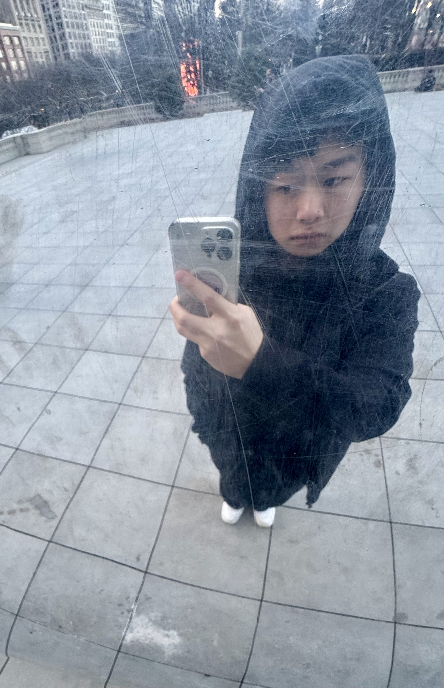
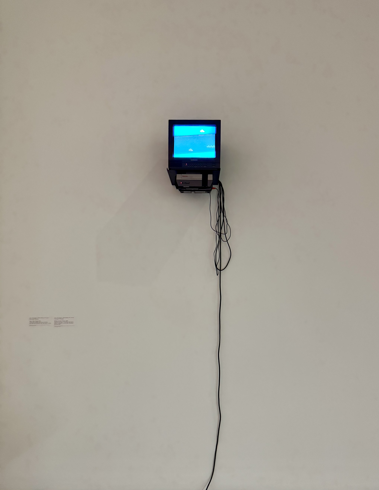
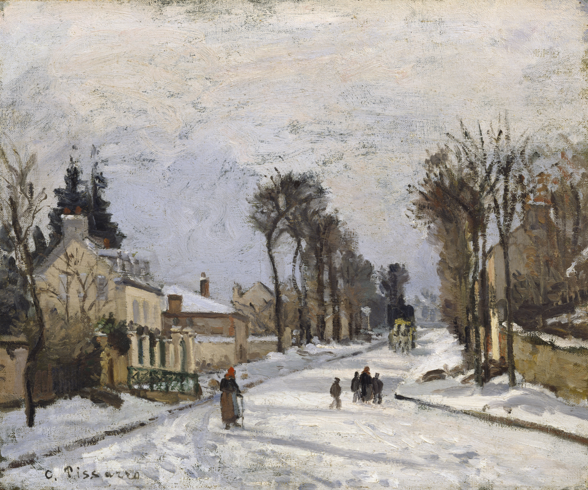
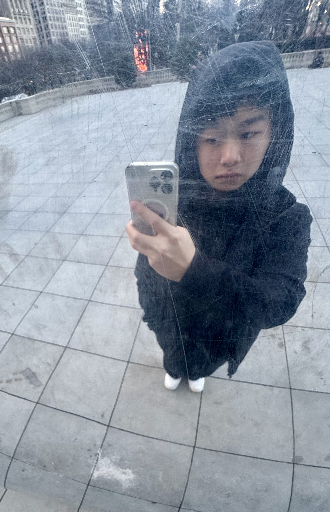

LET THAT FOG SETTLE...
Ethan Ku
古皓元
 





INFO
I'm an undergraduate student at the University of Michigan, studying Electrical Engineering and graduating in 2027.
I design spaces and systems that people can enjoy, always striving to curate an engaging experience as they navigate the world.
During my sophomore testyear, I decided to shift my career towards designing for analog computing spaces because of a desire to work at more modern and holistic scales. While computing and architecture slowly evolve, still, at the heart of these disciplines are what makes design valuable – it fulfills people's lives through emotion, functionality, and purpose.
University of Michigan, Ann Arbor
College of Engineering
2024-2027
Bachelors of Science in Engineering – Electrical Engineering

Michigan campus during the spring
Design Foundations
Great Taste
I believe that great taste, as defined by Ira Glass, is developed through an interdisciplinary study of design – art, architecture, fashion, etc. Beyond interfaces, understanding how design works, looks, and feels in the real world helps me as a designer develop a better intuition of what feels right. I'm not afraid of trying new things and always strive towards 'best-in-class'.
Future of technology
The future of personal computing is astounding to me as our interfaces more seamlessly blend and understand our daily intentions. As human computer interfaces (Jef Raskin) get better at understanding human gesture, I believe that it's role is to help us better interact in the physical world in front of people, and I'm curious about how we can make such technology seem invisible.
Things I Love To Do
Traveling to new cities
Visit aesthetic cafes
Snowboard in Hokkaido, Japan
Visit aesthetic cafes
Snowboard in Hokkaido, Japan